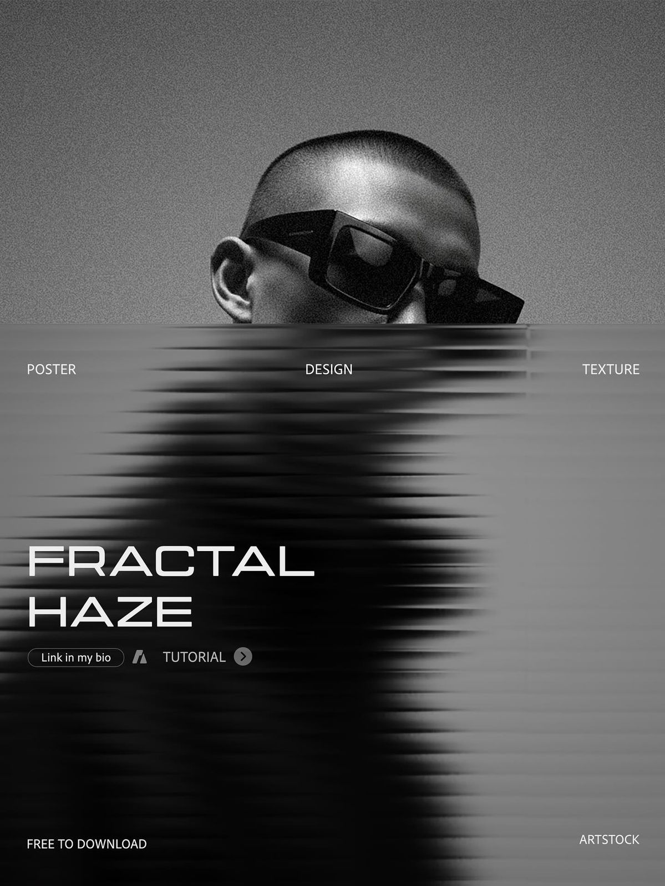
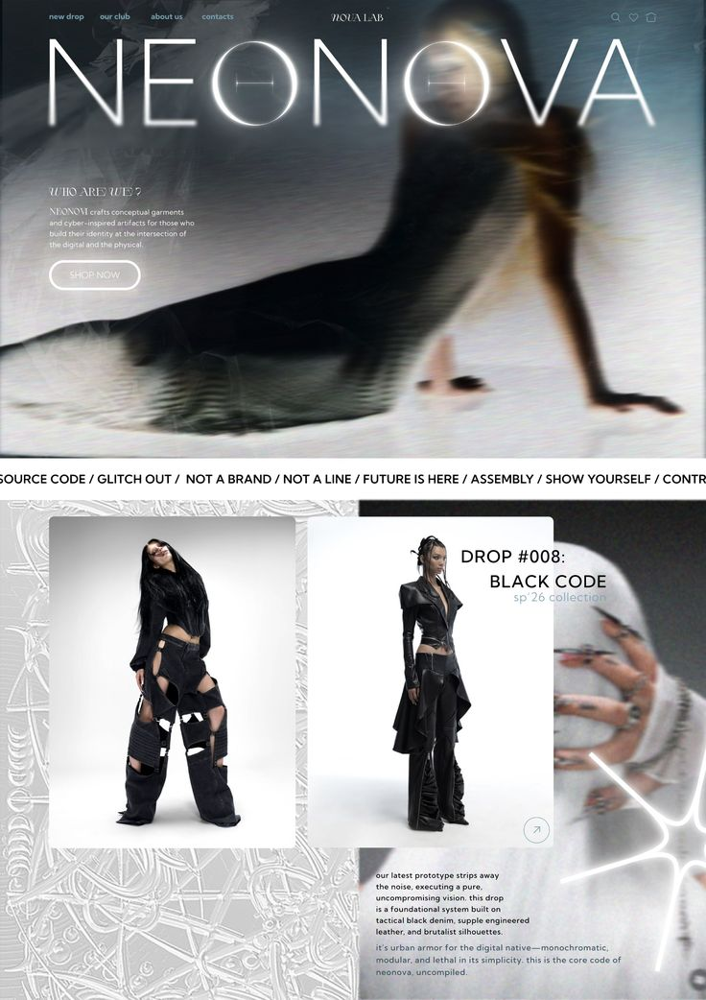

Featured archive
重点展示的是那些已经停产、但依然足够锋利的精品二手单品。
all black 不追求大量上新，而是用更克制的方式筛选旧季精品、黑色系单品和更耐看的轮廓。 首页先展示氛围和精选方向，再让用户进入系列页与商品页查看具体单品状态。
- 主打 archive coat、structured outerwear 和黑色系设计师单品
- 强调稀缺性、成色、品牌出处和二手再流通价值
- 系列页负责策展，商店页负责查看在售状态与价格
Curated secondhand selection
all black 是一个展示精品二手服装的网站，专注于黑色系、冷调轮廓和具有收藏价值的旧季单品。 这里的每一件衣服都不是批量新品，而是经过筛选之后重新进入视野的 archive piece。
Archive focus
Featured archive
all black 不追求大量上新，而是用更克制的方式筛选旧季精品、黑色系单品和更耐看的轮廓。 首页先展示氛围和精选方向，再让用户进入系列页与商品页查看具体单品状态。

Featured products
这里展示的是当前值得优先浏览的 archive pieces，用户可以直接进入商店或查看单品详情。


Brand slogan
all black 关注的不只是“二手”，而是那些重新进入视野后依然成立的服装。 我们用更安静的版式和更精选的单品，让这个网站更像精品 archive 空间，而不是普通转卖列表。